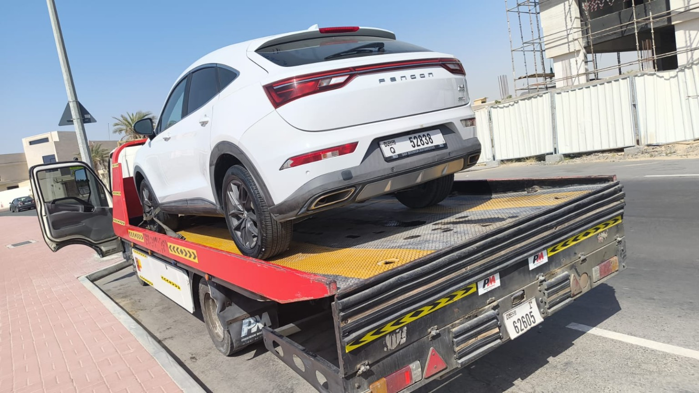
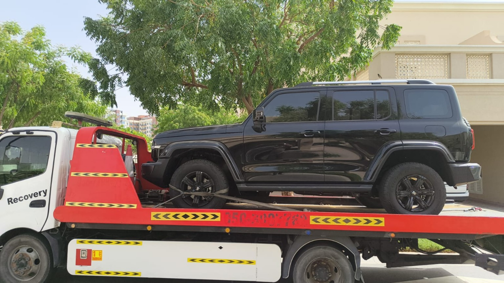
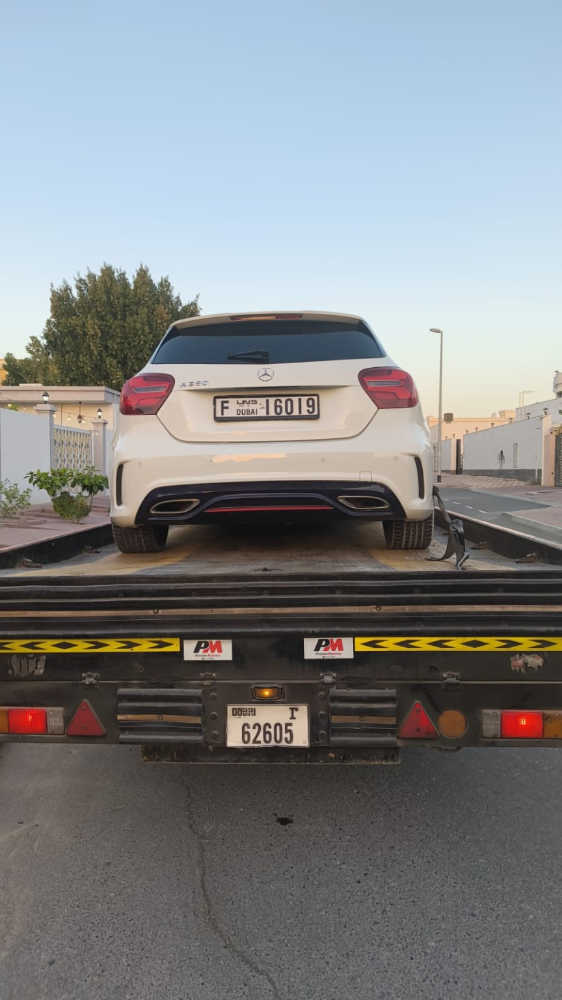
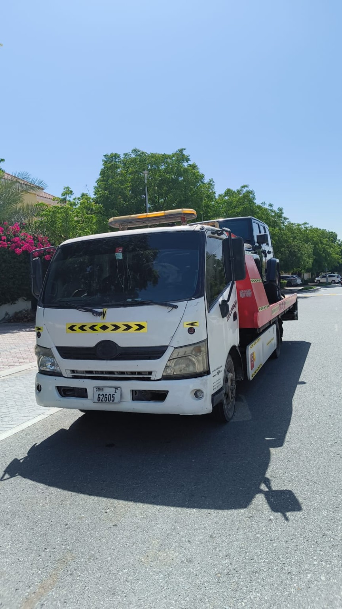
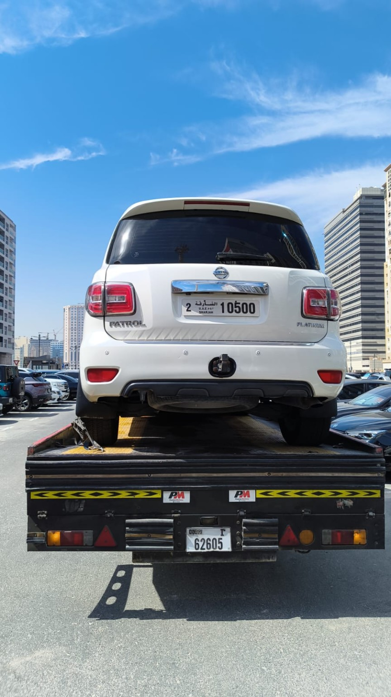
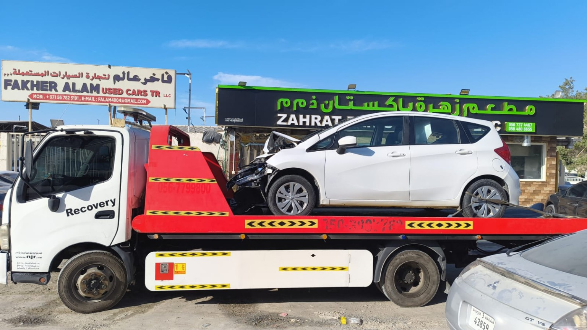
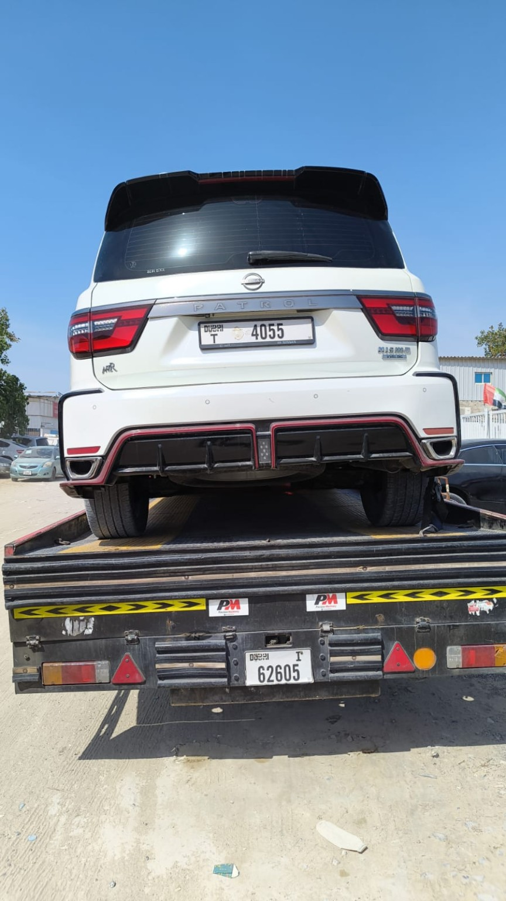
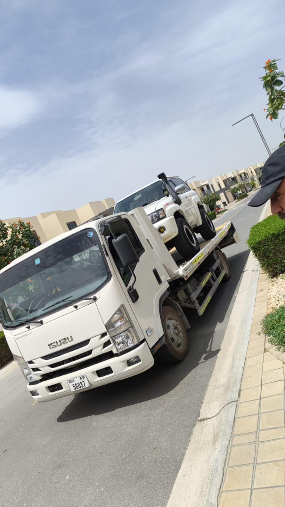
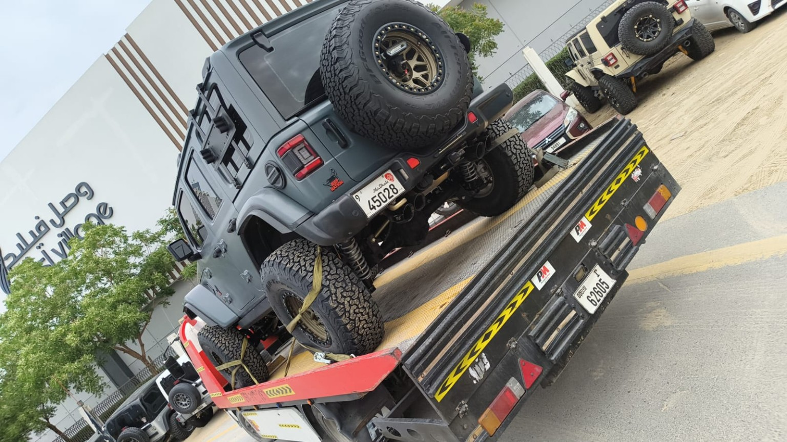

صور من عملنا
سيارات تم نقلها بعناية بواسطة فريق NJR داخل دبي.









خدمة سريعة وآمنة لنقل السيارات المتعطلة، سيارات الحوادث، السيارات الفخمة والدفع الرباعي من أبو هيل إلى جميع مناطق دبي.
Fast and safe recovery, tow truck, flatbed towing and car transport from Abu Hail to all areas of Dubai.

خدمة سحب ونقل سيارات متوفرة طوال اليوم داخل دبي.
Professional recovery and towing services across Dubai.
خدمة ريكفري دبي 24 ساعة لنقل السيارات المتعطلة وسيارات الحوادث بسرعة وأمان داخل جميع مناطق دبي.
افتح الصفحةخدمة ونش دبي لنقل وسحب السيارات من الطريق إلى الورشة أو المنزل أو المعرض مع سائقين محترفين.
افتح الصفحةسطحة دبي آمنة لنقل السيارات الفخمة والدفع الرباعي وسيارات الحوادث بدون ضرر.
افتح الصفحةنقل سيارات دبي من وإلى الورش والمعارض والفحص والمنازل داخل دبي وخارجها حسب الطلب.
افتح الصفحةحلول سحب وكرين دبي للحالات الصعبة والمركبات التي تحتاج تعامل خاص.
افتح الصفحةريكفري دبي 24 ساعة للطوارئ، الأعطال، الحوادث ونقل السيارة في أي وقت.
افتح الصفحةإذا تعطلت سيارتك في الطريق أو احتجت إلى ونش دبي أو سطحة دبي، يمكن لفريق NJR TRANSPORT AND TOWING الوصول إلى موقعك ونقل السيارة إلى الورشة أو المنزل أو المعرض. نخدم السيارات الصغيرة، الدفع الرباعي، السيارات الفخمة وسيارات الحوادث، مع تثبيت السيارة بعناية على السطحة.
نغطي أبو هيل، ديرة، القصيص، النهدة، البرشاء، جميرا، دبي مارينا، الخليج التجاري، داون تاون، مردف، الورقاء، القرهود، القوز، جبل علي وشارع الشيخ زايد.
NJR Transport and Towing provides 24/7 recovery, tow truck, flatbed towing and vehicle transport across Dubai with safe loading and careful vehicle handling.
سيارات تم نقلها بعناية بواسطة فريق NJR داخل دبي.








نخدم أغلب مناطق دبي ونوفر وصول سريع حسب الموقع وحركة الطريق.
نعم، نوفر خدمة ريكفري دبي وونش دبي 24 ساعة حسب توفر السائق والموقع.
نعم، يتم تثبيت السيارة بعناية على السطحة لتقليل خطر الخدوش أو الأضرار أثناء النقل.
يمكنك الاتصال مباشرة على 0525877378 أو 0503773154، أو مراسلتنا عبر واتساب.
NJR TRANSPORT AND TOWING — أبو هيل، دبي